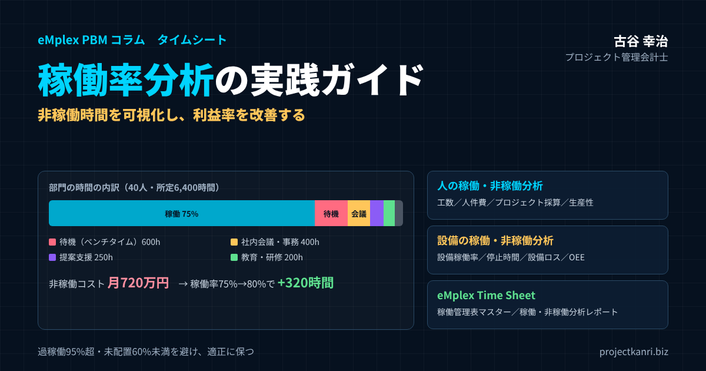

稼働率分析の実践ガイド｜非稼働時間を可視化し利益率を改善する―稼働率とは・計算方法・適正値、人と設備の稼働・非稼働分析、工数管理とプロジェクト採算、稼働率を上げる方法、eMplex Time Sheetの稼働管理表マスターと稼働/非稼働分析レポート

結論：利益率は「非稼働時間の見える化」から改善する
この記事の要点
- 稼働率とは：使える時間のうち価値を生む活動に使われた時間の割合（人＝プロジェクト工数÷所定労働時間）
- 非稼働時間：待機・社内会議・提案支援・教育・休暇などに分け、減らす時間と守る時間を区別
- 四つの視点：工数・人件費・プロジェクト採算・生産性で、部門・社員・プロジェクト別に分析
- 利益への影響：40人の部門で稼働率75%→80%なら月320時間、売上ポテンシャル月256万円
- 適正値：100%を目指さない。過稼働（95%超）と未配置（60%未満）の両方を避ける
- 設備：停止時間・六つの設備ロス・OEE（時間稼働率×性能稼働率×良品率）
プロジェクト管理会計士の古谷です。プロジェクト型ビジネスの会社のご支援で、私が最初に確認する数字の一つが稼働率です。売上が伸びているのに利益が残らない会社の多くで、社員の時間のうち、プロジェクトに使われていない時間、つまり非稼働の時間が、思った以上に大きくなっています。
建設、システム開発、コンサルティング、映像制作といったプロジェクト型のビジネスでは、原価の大半が人の時間です。社員の人件費は、プロジェクトに使われても、使われなくても、毎月同じように発生します。プロジェクトに使われなかった時間の人件費は、どのプロジェクトの売上でも回収されず、そのまま会社の利益を削ります。
本記事の結論は三つです。第一に、稼働率を、プロジェクトに使った時間と使わなかった時間に分けて正しく計算し、非稼働時間を理由ごとに可視化すること。第二に、稼働・非稼働の分析を、工数、人件費、プロジェクト採算、生産性の四つの視点で、部門、社員、プロジェクトの単位まで掘り下げること。第三に、稼働率を上げることだけを目的にせず、過稼働を避けながら、適正な水準で安定させることです。
本記事では、人の稼働・非稼働分析を中心に、製造や建設の現場で使われる設備の稼働・非稼働分析にも触れ、最後に、私たちが提供しているeMplex Time Sheetの稼働管理表マスターと稼働/非稼働分析レポートを紹介します。
稼働率とは：人の稼働率と設備の稼働率
稼働率とは、使うことのできる時間のうち、実際に価値を生む活動に使われた時間の割合です。何を対象にするかによって、人の稼働率と設備の稼働率に大きく分かれます。
| 項目 | 人の稼働率 | 設備の稼働率 |
|---|---|---|
| 対象 | 社員の労働時間 | 機械・設備の使用可能な時間 |
| 分子 | プロジェクト・顧客の仕事に使った時間 | 実際に稼働した時間 |
| 主な指標 | 稼働率、ビラブル率、時間あたり粗利 | 設備稼働率、停止時間、OEE |
| 主な非稼働 | 待機、社内業務、教育、休暇 | 故障、段取り、材料・作業者待ち、保守 |
人の稼働率は、社員の労働時間のうち、プロジェクトや顧客の仕事に使われた時間の割合です。プロジェクト型ビジネスでは、顧客に請求できる、あるいはプロジェクトの原価になる時間の割合として捉えるのが一般的です。コンサルティングやITの業界では、請求可能な時間の割合という意味で、ビラブル率と呼ぶこともあります。
設備の稼働率は、機械や設備を使うことのできる時間のうち、実際に生産や作業に使われた時間の割合です。製造業では、設備の稼働率に加えて、設備の性能や品質の面のロスも含めて評価する、OEE、つまり設備総合効率という指標がよく使われます。設備の稼働分析については、後半で詳しく解説します。
なお、製造の現場では、稼働率と似た言葉に可動率があります。可動率は、設備を動かしたいときに、故障などなく正常に動かせる状態にあった時間の割合で、設備の信頼性を表します。稼働率は、仕事の量にも左右されるため、仕事がなければ下がりますが、可動率は仕事の量には左右されません。言葉の違いを社内でそろえておくと、議論が混乱しません。
稼働率の計算方法：分母と分子をどう決めるか
稼働率の計算方法は単純ですが、分母と分子に何を入れるかで、数字の意味が大きく変わります。まず、人の稼働率の基本の計算式を整理しましょう。
| 方式 | 計算式 | 特徴 |
|---|---|---|
| 基本（お勧め） | プロジェクト工数÷所定労働時間 | 休暇・研修も非稼働に含まれる。比較しやすい |
| 稼働可能時間ベース | プロジェクト工数÷（所定労働時間－休暇） | 実際に働いた時間に対する割合 |
| 総労働時間ベース | プロジェクト工数÷（所定＋残業） | 残業が多いと実態が見えにくい |
| 請求可能時間（ビラブル率） | 顧客に請求できる工数÷所定労働時間 | コンサル・ITで多用 |
例：所定160時間、プロジェクト工数120時間 → 稼働率75%
最もよく使われるのは、プロジェクトの工数を、所定の労働時間で割る方法です。たとえば、所定の労働時間が月160時間の社員が、プロジェクトに120時間を使ったなら、稼働率は75%です。
分母の選び方には、いくつかの考え方があります。所定の労働時間を分母にすると、休暇や研修の時間も非稼働として扱われるため、稼働率は低めに出ます。休暇の時間を除いた稼働可能な時間を分母にすると、実際に働いた時間に対する割合が分かります。残業を含めた総労働時間を分母にすると、残業が多い月は稼働率が高く見えても、その実態が分かりにくくなります。
分子の選び方も重要です。顧客に請求できる時間だけを分子にするのか、社内のプロジェクトや提案の作業も含めるのか。私がお勧めしているのは、分母は所定の労働時間、分子は顧客のプロジェクトの工数を基本とし、社内のプロジェクトや提案の作業は別の区分として集計しておくことです。どの方式を選ぶにしても、社内で計算方法を統一し、毎月同じ方法で計算し続けることが、何より大切です。
一つ注意したいのは、残業が多い社員の稼働率の解釈です。所定の160時間に対してプロジェクトの工数が180時間なら、稼働率は100%を超えます。これは効率が高いのではなく、過稼働の状態です。稼働率が高すぎることも、低すぎることと同じように、問題の兆しとして扱う必要があります。
設備の稼働率も、分母を何にするかで意味が変わります。暦の上のすべての時間を分母にするのか、設備を動かす予定の時間を分母にするのか。人の稼働率と同じように、社内で定義をそろえておきましょう。
稼働と非稼働の分類：非稼働時間は理由で分ける
稼働率の分析を利益の改善につなげるには、非稼働の時間を一つにまとめず、理由ごとに分けて記録することが欠かせません。非稼働時間には、減らすべきものと、必要なものがあるからです。
| 区分 | 例 | 扱い |
|---|---|---|
| 稼働（顧客プロジェクト） | 設計・開発・施工・制作・コンサルティング | 最大化の対象（ただし手戻り等のロスに注意） |
| 待機（ベンチタイム・空き工数） | 案件間の空き、受注遅れによる待ち | 削減対象 |
| 社内会議・事務 | 定例会議、報告、申請・承認の事務 | 削減対象（必要分は残す） |
| 提案・営業支援 | 見積、提案書、プレゼン | 次の受注のための投資 |
| 教育・研修 | 技術研修、資格取得 | 将来の稼働の質への投資 |
| 休暇 | 有給休暇、特別休暇 | 必要な時間 |
待機の時間、いわゆるベンチタイムは、案件と案件の間で、配置される仕事がない時間です。空き工数とも呼ばれ、減らすべき非稼働時間の代表です。社内の会議や事務の時間は、組織の運営に必要なものもありますが、多すぎれば削減の対象になります。教育や研修の時間は、将来の稼働の質を高めるための投資であり、単純に減らすべきものではありません。提案や営業の支援の時間は、次の受注のための投資です。休暇の時間は、社員の健康と働き方のために必要なものです。
また、稼働の時間の中にも、ロスが含まれていることがあります。手戻りの作業、見積に含まれていなかった追加の作業、他の人の作業の待ちの時間などです。これらは、プロジェクトの工数としては記録されていても、価値を生んでいない時間、いわば工数のロスです。稼働の時間を、作業の区分ごとに記録しておけば、こうした工数のロスも分析できるようになります。
非稼働時間を理由ごとに分けることで、どの時間を減らし、どの時間を守るべきかを、経営として判断できるようになります。稼働率の数字だけを見て、すべての非稼働時間を減らそうとすると、教育や提案の時間まで削られ、長期的な競争力を損なってしまいます。
入力の漏れを見つける：所定時間と入力合計の差
非稼働時間の分析で見落とされやすいのが、記録されていない時間です。所定の労働時間が160時間の社員の、プロジェクトの工数と非稼働の時間の合計が140時間しかなければ、残りの20時間は、どこにも記録されていません。
記録されていない時間は、非稼働の時間として扱うべきか、入力の漏れとして扱うべきかを確認する必要があります。多くの場合は、入力の漏れです。実際にはプロジェクトの作業をしていたのに記録していなかったのであれば、そのプロジェクトの原価が少なく見え、採算が実態より良く見えてしまいます。
私がお勧めしているのは、社員ごとに、所定の労働時間と、入力された時間の合計の差を毎月確認することです。差が一定の時間を超える社員には、入力の内容を確認してもらいます。日ごとに入力の合計時間を確認し、8時間に満たない日が分かるようにしておけば、月末を待たずに漏れに気づくことができます。本記事で紹介するExcelのテンプレートにも、所定の時間と入力の合計の差を計算する列を設けています。
非稼働時間を可視化する意味
非稼働時間は、放っておくと見えません。社員は毎日忙しく働いているように見えますし、実際に多くの時間を何らかの仕事に使っています。しかし、その時間がプロジェクトに使われているのか、社内の調整や待機に使われているのかは、記録しなければ分かりません。
非稼働時間を可視化することには、三つの意味があります。一つ目は、利益の漏れを見つけることです。非稼働時間の人件費は、どのプロジェクトの売上でも回収されない費用です。それが月にいくらになっているのかを知るだけで、経営の危機感は大きく変わります。
二つ目は、人の配置を見直す材料を得ることです。ある部門では待機の時間が多く、別の部門では過稼働の社員が多い。この偏りが見えれば、部門をまたいだ人の配置や、採用の計画の見直しにつなげられます。
三つ目は、業務の改善の対象を見つけることです。社内の会議や事務の時間が多い部門、手戻りの作業が多いプロジェクトが分かれば、具体的な改善の打ち手を考えることができます。非稼働時間の可視化は、利益の改善の出発点なのです。
非稼働時間の可視化は、毎月の報告の形にして初めて定着します。部門ごとの非稼働の時間と、その内訳、非稼働のコストを、毎月同じ形式のレポートで経営に報告する。この習慣が、非稼働時間を減らす取り組みを、一時的なものではなく、継続的なものにします。
人の稼働・非稼働分析の四つの視点：工数・人件費・プロジェクト採算・生産性
人の稼働・非稼働分析は、次の四つの視点で行うと、経営の判断に結びつけやすくなります。
| 視点 | 見るもの | 主な指標 |
|---|---|---|
| 工数 | 誰が・どのPJに・どの作業に・何時間 | 稼働時間、非稼働時間の内訳 |
| 人件費 | 時間×人件費単価 | 非稼働コスト、稼働原価 |
| プロジェクト採算 | 工数・人件費の予算と実績 | 工数差異、粗利率 |
| 生産性 | 時間あたりの価値 | 時間あたり粗利、一人あたり粗利 |
工数の視点では、時間そのものを見ます。誰が、どのプロジェクトに、どの作業に、何時間使ったのか。非稼働の時間は、どの理由で、何時間あったのか。工数管理の基本であり、他の三つの視点の土台になります。
人件費の視点では、時間に人件費の単価を掛けて、金額で見ます。非稼働の時間を金額に換算すると、経営にとっての重みがはっきりします。同じ10時間の非稼働でも、時間単価の高い上級の社員と、若手の社員とでは、会社の負担は大きく違います。
プロジェクト採算の視点では、プロジェクトに使われた工数と人件費を、プロジェクトの原価として集計し、予算と比べます。工数が予算を超えているプロジェクトは、採算が悪化しています。稼働率が高くても、その時間が採算の悪いプロジェクトに使われていれば、利益は増えません。
生産性の視点では、時間あたりにどれだけの価値を生んだのかを見ます。時間あたりの粗利、一人あたりの粗利といった指標です。稼働率を上げることは大切ですが、最終的に目指すべきは、時間の生産性を上げることです。
四つの視点は、それぞれ別の人が主に使います。工数は社員本人と上長、人件費は経理と部門長、プロジェクト採算はプロジェクトマネージャー、生産性は経営です。同じ工数のデータから、それぞれの立場に必要な数字を作れるようにしておくことが、稼働分析の仕組みの理想の姿です。
数値例：ある部門の稼働・非稼働分析
具体的な数字で、稼働・非稼働分析を見てみましょう。社員が40人、一人あたりの所定の労働時間が月160時間の開発の部門を想定します。部門全体の所定の労働時間は、月6,400時間です。
| 区分 | 時間 | 構成比 |
|---|---|---|
| 所定労働時間 | 6,400時間 | 100% |
| 顧客プロジェクトの工数 | 4,800時間 | 75.0%（稼働率） |
| 待機 | 600時間 | 9.4% |
| 社内会議・事務 | 400時間 | 6.3% |
| 提案支援 | 250時間 | 3.9% |
| 教育・研修 | 200時間 | 3.1% |
| その他 | 150時間 | 2.3% |
| 非稼働の合計 | 1,600時間 | 25.0% |
数値は説明のための例です。
この月、顧客のプロジェクトに使われた工数は4,800時間で、稼働率は75%でした。非稼働の時間は1,600時間で、その内訳は、待機が600時間、社内の会議と事務が400時間、提案の支援が250時間、教育と研修が200時間、その他が150時間でした。
非稼働の時間の内訳を見ると、最も大きいのは待機の時間で、非稼働の時間の4割近くを占めています。案件の受注の遅れや、案件と案件の間の空きが原因と考えられます。次に大きいのは社内の会議と事務の時間です。この二つが、改善の優先度の高い対象です。一方で、提案の支援と教育の時間は、次の受注と社員の成長のための時間であり、むしろ計画的に確保すべき時間です。
このような内訳は、非稼働の区分を決めて記録して初めて見えるものです。
非稼働時間のコストと利益率への影響
非稼働時間を金額に換算してみましょう。先ほどの部門の時間単価、つまり一時間あたりの人件費を4,500円とします。
| 項目 | 計算 | 金額 |
|---|---|---|
| 非稼働コスト（月） | 1,600時間×4,500円 | 720万円 |
| 非稼働コスト（年） | 720万円×12か月 | 8,640万円 |
| うち待機（月） | 600時間×4,500円 | 270万円 |
| 稼働率75%→80%の追加稼働 | 6,400時間×5% | 月320時間 |
| 回収できる人件費 | 320時間×4,500円 | 月144万円 |
| 売上ポテンシャル（請求単価8,000円） | 320時間×8,000円 | 月256万円（年約3,000万円） |
非稼働の1,600時間を金額にすると、月720万円、年間では8,640万円になります。このうち、待機の600時間だけでも、月270万円、年間3,240万円です。これらの人件費は、どのプロジェクトの売上でも回収されていません。
では、稼働率を75%から80%に上げると、何が起きるでしょうか。5ポイントの改善は、部門全体で月320時間の稼働の増加にあたります。この時間を顧客のプロジェクトに使えれば、原価として回収できる人件費は月144万円増えます。顧客に請求する時間単価が8,000円なら、売上は月256万円、年間で約3,000万円増える可能性があります。人件費は増えないため、この増加分の多くが利益になります。
このように、稼働率の数ポイントの改善が、会社の利益率を大きく左右します。プロジェクト型ビジネスにとって、稼働率の管理は、最も効果の大きい利益の改善の手段の一つです。
非稼働時間のコストを会計でどう扱うか
非稼働の時間の人件費を、管理会計でどう扱うかも決めておく必要があります。プロジェクトの原価に含めるのか、部門の費用として残すのかで、プロジェクトの採算の見え方が変わるからです。
私がお勧めしているのは、プロジェクトの原価には、そのプロジェクトに使った工数の人件費だけを含め、非稼働の時間の人件費は、部門の未稼働のコストとして、部門の損益で見ることです。こうすれば、プロジェクトの採算は、プロジェクトマネージャーが管理できる範囲の数字になり、非稼働のコストは、部門長が稼働率の改善の責任として向き合う数字になります。
非稼働のコストをプロジェクトに配賦してしまうと、稼働率の低い月ほどプロジェクトの原価が高く見え、プロジェクトの採算の問題と、部門の稼働の問題が混ざってしまいます。プロジェクトの採算と、部門の稼働の管理を分けることが、どちらの改善にもつながります。部門別の組織とプロジェクト別の原価計算の関係については、別の記事で詳しく解説しています。
この切り分けの考え方は、本記事のテンプレートでも採用しています。
稼働率の適正値と目標の設定
稼働率は、高ければ高いほどよいというものではありません。稼働率が100%に近い状態は、教育も提案も休暇もなく、すべての時間を案件に使っている状態です。こうした状態が続けば、社員は疲弊し、品質は下がり、離職が増えます。新しい案件を受ける余裕もなくなります。
| 水準 | 状態 | 対応 |
|---|---|---|
| 95%超 | 過稼働リスク | 負荷の分散、品質・健康の確認 |
| 80%前後 | 目標の水準（実務担当の例） | 維持・安定 |
| 60%〜80% | 改善の余地 | 非稼働の内訳を確認 |
| 60%未満 | 未配置リスク | アサインの見直し、案件の確保 |
eMplex Time Sheetの稼働管理ダッシュボードの基準（目標80%、過稼働95%超、未配置60%未満）に沿った例です。
稼働率の適正値は、業種、職種、会社の方針によって異なります。私がご支援してきた会社では、プロジェクトの実務を担う社員の稼働率の目標を、おおむね70%台から80%台に置くことが多いと感じています。管理職や、提案や教育の役割を多く担う社員は、それより低い目標にするのが自然です。
eMplex Time Sheetの稼働管理のダッシュボードでは、目標ラインを80%とし、95%を超える社員を過稼働のリスク、60%を下回る社員を未配置のリスクとして、自動で検知する考え方を採っています。こうした上限と下限の両方を決めておくことで、稼働率を上げることだけでなく、適正な範囲に保つことを、管理の目的にすることができます。
目標は、部門や職種ごとに設定し、全員に同じ数字を求めないことが大切です。また、年間を通じた目標と、月ごとの目標を分けて考えます。案件の季節性がある会社では、月ごとの稼働率は大きく変動します。単月の数字に一喜一憂せず、四半期や年間の累計で目標と比べることをお勧めします。
稼働率と品質・離職の関係
稼働率を高く保ち続けると、短期的には利益が増えますが、長期的には別の問題が生まれます。過稼働の状態が続くと、確認や見直しの時間が削られ、品質の問題や手戻りが増えます。手戻りが増えれば、結局は工数が増え、プロジェクトの採算は悪化します。
また、過稼働の状態は、社員の健康と意欲を損ない、離職につながります。経験のある社員が一人辞めれば、その穴を埋めるための採用と教育に、大きな時間と費用がかかります。稼働率の上限を決め、過稼働の社員を早めに見つけて負荷を分散することは、品質と人材を守るための投資です。
私は、稼働率と合わせて、手戻りの工数の割合や、過稼働の状態が続いている社員の人数を、定期的に確認することをお勧めしています。稼働率が上がっているのに、手戻りの割合も上がっているなら、それは過稼働の兆しかもしれません。
部門別・社員別・プロジェクト別に掘り下げる
稼働率の分析は、会社全体の平均だけを見ていても、打ち手につながりません。部門別、社員別、プロジェクト別に掘り下げることで、問題の場所が見えてきます。
| 単位 | 分かること | 責任者・使い道 |
|---|---|---|
| 部門別稼働率 | 部門間の偏り | 部門長、部門をまたいだ配置 |
| 社員別稼働率 | 部門内の偏り、過稼働・未配置 | 上長、1on1・配置替え（評価への直結は慎重に） |
| プロジェクト別工数 | 工数の予算超過 | PM、採算の管理 |
部門別の稼働率を比べると、部門の間の偏りが分かります。ある部門の稼働率が低く、別の部門が過稼働であれば、部門をまたいだ人の配置の見直しを検討します。部門別の稼働率は、部門長が責任を持つべき指標です。
社員別の稼働率を見ると、同じ部門の中の偏りが分かります。特定の社員に仕事が集中していないか、逆に仕事が配置されていない社員がいないか。社員別の稼働率は、一対一の面談や、配置の判断の材料になります。ただし、社員別の稼働率を、個人の評価に直接使うことには慎重であるべきです。稼働率は、本人の努力よりも、配置される仕事の量に左右されるからです。
プロジェクト別に見ると、どのプロジェクトに、どれだけの工数が使われているのかが分かります。工数の予算と比べて、超過しているプロジェクトは、採算の悪化の兆しです。稼働率の分析とプロジェクトの予実の管理は、同じ工数のデータを、別の角度から見るものなのです。
掘り下げの順番は、全社、部門、社員、プロジェクトの順が基本です。全社の稼働率が目標を下回っていたら、どの部門が下げているのかを確認し、その部門の中で、どの社員の稼働率が低いのか、どのプロジェクトの工数が予定と違うのかを確認します。上から順に掘り下げることで、原因にたどり着くまでの時間を短くできます。
稼働率とプロジェクト採算：工数差異分析と予実管理
稼働率の分析は、プロジェクトの採算の管理と切り離せません。稼働率が高くても、その時間が見積を超えた手戻りの作業に使われていれば、プロジェクトの採算は悪化します。
そこで大切になるのが、プロジェクトの工数の予算と実績を比べる、工数差異分析です。プロジェクトごとに、工程や作業ごとの予定の工数と、実際の工数を比べ、差の原因を確かめます。
| 工程 | 予定工数 | 実績工数 | 差異 | 原価への影響（4,500円／時間） |
|---|---|---|---|---|
| 設計 | 500時間 | 620時間 | ＋120時間 | ＋54万円 |
| 開発 | 900時間 | 950時間 | ＋50時間 | ＋22.5万円 |
| テスト | 600時間 | 780時間 | ＋180時間 | ＋81万円 |
| 合計 | 2,000時間 | 2,350時間 | ＋350時間 | ＋157.5万円 |
工数の差異を、プロジェクトの原価の差異に換算すると、プロジェクトの採算への影響が分かります。差異の原因が、顧客の要望による追加の作業であれば、変更の契約として請求できる可能性があります。社内の見積の漏れや手戻りであれば、次の見積に活かします。
稼働率とプロジェクトの採算の両方を見ることで、会社の時間の使い方の全体像が見えます。稼働率は、社員の時間がプロジェクトに使われているかどうかを、プロジェクトの採算は、その時間が予定どおりの成果を生んでいるかどうかを示します。どちらか一方だけでは、利益の改善の打ち手は見えてきません。
工数差異の分析は、プロジェクトが終わってからではなく、進行中に毎月行うことで、残りの工程での手当てが可能になります。
生産性分析：時間あたりの粗利で見る
稼働率は、時間の使い方の量を表す指標です。しかし、利益率を改善するには、時間の使い方の質、つまり生産性にも目を向ける必要があります。
| 指標 | 計算 | 使い道 |
|---|---|---|
| 時間あたり粗利 | 粗利÷工数 | 案件・顧客の優先度の判断 |
| 一人あたり粗利 | 粗利÷人数 | 成長の質の確認 |
| 稼働率 | プロジェクト工数÷所定時間 | 時間の使い方の量 |
時間あたりの粗利は、プロジェクトの粗利を、そのプロジェクトに使った工数で割ったものです。同じ稼働率でも、時間あたりの粗利の高いプロジェクトに時間を使えば、会社の利益は増えます。どの種類の案件、どの顧客の案件が、時間あたりの粗利が高いのかを分析すれば、営業がどの案件を優先すべきかの判断材料になります。
一人あたりの粗利は、会社や部門の粗利を、人数で割ったものです。人を増やして売上が伸びても、一人あたりの粗利が下がっていれば、会社は大きくなっても強くはなっていません。稼働率、時間あたりの粗利、一人あたりの粗利を並べて見ることで、成長の質を確かめることができます。
稼働率と人員計画：人を増やす前に確認すること
案件が増えてくると、多くの会社は人を増やそうとします。しかし、人を増やす前に、今いる社員の稼働率を確認することをお勧めします。
部門の平均の稼働率が70%なのに、特定の社員だけが過稼働になっているなら、問題は人の数ではなく、仕事の配分にあります。この状態で人を増やしても、新しい社員の稼働率が低いまま、会社全体の非稼働の時間が増えるだけかもしれません。まずは、過稼働の社員の仕事を、稼働率の低い社員に回せないかを検討します。スキルの不一致が原因であれば、教育やペアでの作業で、仕事を回せる社員を育てます。
部門の平均の稼働率が目標を上回り、多くの社員が過稼働に近い状態が続いているなら、人を増やす根拠があります。そのときも、採用した社員が稼働できるようになるまでの期間を見込み、その間の稼働率の低下を、予算に織り込んでおきましょう。
ベンチタイムと未稼働人員：要員配置の最適化
待機の時間、いわゆるベンチタイムの管理は、プロジェクト型ビジネスの利益率の改善で、最も効果の大きいテーマの一つです。
ベンチタイムが生まれる原因は、主に三つあります。一つ目は、受注の遅れです。予定していた案件の開始が遅れれば、その案件に配置する予定だった社員は待機になります。二つ目は、案件と案件の間の空きです。一つの案件が終わってから、次の案件が始まるまでの間に、空きが生まれます。三つ目は、スキルと案件の不一致です。案件はあっても、その案件に必要なスキルを持つ社員がいない、あるいは待機している社員のスキルに合う案件がない、という状態です。
| 原因 | 対策 |
|---|---|
| 受注の遅れ | 受注見込みとアサイン計画の突き合わせ、短期案件の準備 |
| 案件と案件の間の空き | 数か月先の配置予定の一覧化、次案件の早期確保 |
| スキルと案件の不一致 | スキルの幅を広げる教育、スキル情報の管理 |
ベンチタイムを減らすには、先の時期の人の配置の予定、つまりアサインの計画を、案件の受注の見込みと突き合わせることが大切です。数か月先に、誰がどの案件に何人月配置される予定なのかを一覧にすれば、配置の予定のない社員、つまり未稼働の人員が、前もって分かります。未稼働の人員が見えれば、営業はその社員のスキルに合う案件を探し、管理職は社内のプロジェクトや教育の計画を前倒しにすることができます。
要員配置の最適化とは、すべての社員の稼働率を均一にすることではありません。案件の需要と、社員のスキルと、社員の成長の機会を組み合わせ、会社全体として、時間の生産性が最も高くなる配置を目指すことです。そのためには、稼働の実績だけでなく、配置の予定、スキル、そして受注の見込みの情報を、一つの場所で見られるようにしておく必要があります。
稼働率を予測する：アサイン計画から先を読む
稼働率の分析は、過去の実績を見るだけでなく、先の稼働率を予測することにも使えます。数か月先のアサインの計画、つまり誰をどのプロジェクトに何人月配置する予定なのかが分かれば、部門や社員ごとの予定の稼働率を計算できます。
| 月 | 配置予定（人月） | 予定稼働率 | 対応 |
|---|---|---|---|
| 12月 | 33.6人月 | 84% | 維持 |
| 1月 | 30.0人月 | 75% | 教育・社内PJを前倒し、案件確保 |
| 2月 | 26.4人月 | 66% | 営業と連携し案件確保を急ぐ |
| 3月 | 38.8人月 | 97% | 過稼働。協力会社の手配、開始時期の調整 |
予定稼働率＝配置予定の人月÷人数（1人月＝所定時間）。数値は例です。
予定の稼働率が目標を下回る月があれば、その月に向けて、営業は案件の確保を急ぎ、管理職は教育や社内のプロジェクトの計画を前倒しにします。逆に、予定の稼働率が過稼働の水準を超える月があれば、外部の協力会社の手配や、案件の開始の時期の調整を検討します。
予定の稼働率は、採用の計画の判断にも使えます。数か月先まで予定の稼働率が高い状態が続くなら、採用を前倒しにする根拠になります。予定の稼働率が低い状態が続くなら、採用を急ぐ前に、まず今いる社員の稼働を高めることを考えるべきです。稼働率の予測は、受注の見込み、人員の配置、採用の計画をつなぐ、経営の重要な道具なのです。
稼働率を上げる方法
ここまでの分析を踏まえて、稼働率を上げる方法を整理します。
| 方法 | 内容 |
|---|---|
| 待機を減らす | 未稼働人員を前もって把握し、営業と連携して案件を確保 |
| 社内会議・事務を減らす | 会議の棚卸し、報告の資料共有化、承認の簡素化 |
| スキルの幅を広げる | 配置の選択肢を増やし、待機を減らす |
| 負荷を分散する | 過稼働の社員から低稼働の社員へ仕事を回す |
| アサイン計画を見える化する | 人月の配置予定を事業部・チーム・個人で確認 |
最も効果が大きいのは、待機の時間を減らすことです。受注の見込みとアサインの計画を突き合わせ、未稼働の人員を前もって把握し、営業と連携して案件を確保します。案件の開始の時期が読めない場合は、短期の案件や社内のプロジェクトで空きを埋める準備をしておきます。
次に効果が大きいのは、社内の会議や事務の時間を減らすことです。定例の会議の数と時間を見直し、報告のための会議を資料の共有に置き換える、承認の手続きを簡素にする、といった工夫で、稼働の時間を生み出すことができます。
スキルの幅を広げることも、長期的には稼働率を高めます。特定の技術しか扱えない社員は、その技術の案件がなければ待機になります。複数の技術や業務を扱えるよう教育に投資すれば、配置の選択肢が増え、待機の時間が減ります。教育の時間は一時的に稼働率を下げますが、長期的な稼働率の安定につながる投資です。
そして、稼働率を上げる取り組みは、過稼働の社員を増やさないこととセットで進めることが大切です。稼働率の低い社員に仕事を回すことで、過稼働の社員の負担を減らす。部門全体の稼働率を上げながら、社員ごとの稼働率のばらつきを小さくすることが、理想の姿です。
稼働率を上げる取り組みの効果は、すぐには数字に表れないこともあります。少なくとも三か月程度は推移を見て、取り組みが定着しているかを確かめてください。
非稼働時間を削減する方法
非稼働時間の削減は、理由ごとに打ち手が違います。先ほどの分類に沿って整理します。
| 非稼働の理由 | 削減方法 |
|---|---|
| 待機 | アサイン計画と受注見込みの突き合わせ |
| 社内会議・事務 | 会議の棚卸し、事務のシステム化 |
| 手戻り（稼働内のロス） | レビュー・テスト手順の見直し |
| 作業待ち（稼働内のロス） | 作業の順番・体制の見直し |
| 教育・提案支援・休暇 | 削減せず、計画的に確保して予算に見込む |
待機の時間は、アサインの計画と受注の見込みの突き合わせで減らします。社内の会議と事務の時間は、会議の棚卸しと、事務の手続きの簡素化やシステム化で減らします。手戻りの時間は、レビューやテストの手順の見直しで減らします。他の人の作業の待ちの時間は、作業の順番や体制の見直しで減らします。
一方で、教育や研修、提案の支援、休暇の時間は、削減の対象ではなく、計画的に確保すべき時間です。これらの時間を、予算や計画の段階で、あらかじめ見込んでおくことをお勧めします。たとえば、年間の教育の時間の目標を決めておけば、教育の時間が増えたことで稼働率が下がっても、それが計画どおりであることを確認できます。
非稼働時間の削減で注意したいのは、記録の正直さを損なわないことです。非稼働時間を減らすよう強く求めると、社員が、実際には待機していた時間を、プロジェクトの工数として記録するようになることがあります。そうなると、稼働率は見かけ上は上がりますが、プロジェクトの原価が膨らみ、採算の分析が狂います。非稼働時間は、責める対象ではなく、改善の材料であることを、社内で繰り返し伝えることが大切です。
改善の進め方の例：三か月で稼働率を上げる
稼働率の改善を、どのような順番で進めるとよいか、三か月の計画の例で整理してみます。
| 月 | テーマ | 主な取り組み |
|---|---|---|
| 1か月目 | 測る | 定義と非稼働区分の決定、毎日の工数入力の開始 |
| 2か月目 | 分析し、決める | 部門別・社員別・理由別の分析、削減目標の設定 |
| 3か月目 | 実行し、確かめる | アサイン見直し、会議の棚卸し、負荷分散、推移の確認 |
最初の一か月は、測ることに集中します。稼働率の定義と非稼働の区分を決め、全員が毎日工数を入力する運用を始めます。二か月目は、分析し、打ち手を決めます。部門別、社員別、非稼働の理由別の分析を行い、待機の時間と社内の会議の時間の削減の目標を決めます。三か月目は、打ち手を実行し、効果を確かめます。アサインの計画の見直し、会議の棚卸し、過稼働の社員の負担の分散を実行し、稼働率の推移を確認します。
大切なのは、最初から大きな改善を目指さないことです。正しく測ることができれば、改善の対象は自然に見えてきます。そして、改善の効果を数字で確かめることができれば、社員も、稼働の記録の意味を実感できるようになります。
業種別の稼働率分析のポイント：建設業・コンサルティング・IT企業
稼働率の分析の基本は業種を問いませんが、業種ごとに、注意すべき点があります。
| 業種 | ポイント |
|---|---|
| 建設業 | 現場の技術者と本社・支店の社員を分ける。工事間の待機と、建設機械などの設備稼働も確認 |
| コンサルティング | 請求可能時間の割合を職位ごとに目標管理。上級職は提案・育成の時間を考慮 |
| IT企業・システム開発 | 開発・保守運用・社内基盤の時間の扱いを決める。社員の待機とSES利用の重複に注意 |
建設業では、工事の現場に配置される技術者の稼働と、本社や支店で工事の管理や積算を担う社員の稼働を分けて見ることが大切です。現場の技術者は、工事の期間中は稼働が高く、工事と工事の間には待機が生まれやすくなります。工事の受注の見込みと、技術者の配置の予定を突き合わせる管理が欠かせません。建設業の工数管理では、工事ごとの労務費の原価を正しく把握することが、工事の採算の管理の土台になります。また、建設機械などの設備の稼働も、工事の採算に大きく影響します。
コンサルティングでは、稼働率がそのまま売上を決めることが多く、稼働率の管理の重要性が特に高い業種です。コンサルタントの時間のうち、顧客に請求できる時間の割合を、職位ごとに目標として管理するのが一般的です。若手は稼働率の目標を高く、上級の職位は提案や営業、育成の役割があるため目標を低く設定します。
IT企業やシステム開発の会社では、エンジニアの稼働率の管理が中心になります。開発のプロジェクトの工数に加えて、保守や運用の対応、社内の基盤の整備などの時間をどう扱うかを決めておく必要があります。外部のSESの技術者を使っている場合は、社員の待機が発生しているのに外部の技術者を使い続けていないか、という点も確認しましょう。
建設業の稼働率分析では、工事の現場の技術者の時間を、工事ごとの原価として正しく記録することが、建設業の工数管理の基本です。とくに、一人の技術者が複数の工事を兼務している場合は、工事ごとの時間の配分を記録しておかないと、工事ごとの原価の配分が実態とずれてしまいます。
コンサルティングの稼働率の管理では、提案の段階の時間の扱いも重要です。提案に多くの時間をかけても受注できなければ、その時間は非稼働になります。受注の確度に応じて提案にかける時間を調整することも、稼働率の管理の一部です。
テレワークの時代の稼働の見える化
テレワークや、オフィスと自宅を組み合わせた働き方が広がり、上司が部下の働き方を目で見て把握することは難しくなりました。こうした時代だからこそ、工数の記録による稼働の見える化の重要性は高まっています。
工数の記録は、社員を監視するためのものではありません。どこで働いていても、誰がどのプロジェクトにどれだけの時間を使っているのかが分かれば、上司は仕事の配分や負荷の偏りを把握し、適切な支援をすることができます。社員にとっても、自分の時間の使い方を振り返り、上司と共有する材料になります。
テレワークでは、仕事と私生活の境目があいまいになり、長時間の労働に気づきにくくなることもあります。工数の記録と勤怠の記録を合わせて見ることで、過稼働の兆しを早めに見つけることができます。36協定の上限に近づいている社員を把握することも、働き方の管理の大切な一部です。
記録の目的を社員に丁寧に説明し、記録が支援のために使われていることを示すことが、記録の定着の鍵です。
設備の稼働・非稼働分析：設備稼働率・停止時間・設備ロス
ここからは、設備の稼働・非稼働分析を見ていきます。製造業の工場だけでなく、建設業の建設機械、映像制作の撮影の機材、ITのサーバーなど、プロジェクト型ビジネスでも、設備の稼働が採算に影響する場面は少なくありません。
設備の稼働率は、設備を使うことのできる時間のうち、実際に稼働していた時間の割合です。設備が止まっていた時間、つまり停止時間には、故障による停止、段取りや調整による停止、材料や作業者の待ちによる停止、計画的な保守による停止などがあります。人の非稼働時間と同じように、設備の停止時間も、理由ごとに記録することが分析の出発点です。
| ロス | 内容 | OEEで影響する要素 |
|---|---|---|
| 故障ロス | 設備の故障による停止 | 時間稼働率 |
| 段取り・調整ロス | 切り替え・調整による停止 | 時間稼働率 |
| チョコ停・空転ロス | 短い停止、空回り | 性能稼働率 |
| 速度低下ロス | 本来の速さで動いていない | 性能稼働率 |
| 不良・手直しロス | 不良品の発生、手直し | 良品率 |
| 立ち上がりロス | 立ち上げ時の不安定な生産 | 良品率 |
製造の現場では、設備の効率を下げる要因を、設備ロスとして整理する考え方が広く使われています。代表的なものが、故障、段取りと調整、短い停止や空転、速度の低下、不良と手直し、立ち上がりの六つのロスです。停止の時間だけでなく、動いているのに本来の速さで動いていない、動いているのに不良品を作っている、といったロスも含めて捉えるのが特徴です。
設備のロスの分析は、人の稼働の分析にも示唆を与えます。人の時間にも、待機という停止のロスだけでなく、手戻りという品質のロスや、慣れない作業による速度のロスがあります。稼働の時間の長さだけでなく、その中身の質を見るという考え方は、人と設備に共通するものです。
設備の停止時間を記録するときは、停止の開始と終了の時刻、停止の理由、対応した人を記録します。理由の区分をあらかじめ決めておけば、停止の時間を理由ごとに集計し、どのロスが最も大きいのかを確認できます。
OEE（設備総合効率）の計算方法
設備の効率を総合的に評価する指標が、OEE、つまり設備総合効率です。OEEは、時間稼働率、性能稼働率、良品率の三つを掛け合わせて計算します。
| 要素 | 計算式 | 計算 | 結果 |
|---|---|---|---|
| 時間稼働率 | 稼働時間÷負荷時間 | （480分－停止60分）÷480分 | 87.5% |
| 性能稼働率 | 基準サイクルタイム×生産数÷稼働時間 | 1分×357個÷420分 | 85.0% |
| 良品率 | 良品数÷生産数 | 339個÷357個 | 約95.0% |
| OEE | 時間稼働率×性能稼働率×良品率 | 87.5%×85.0%×95.0% | 約70.6% |
検算：良品数339個×基準サイクルタイム1分÷負荷時間480分＝約70.6%
時間稼働率は、設備を動かす予定の時間、いわゆる負荷時間のうち、停止せずに稼働した時間の割合です。性能稼働率は、稼働した時間のうち、本来の速さで生産した場合に相当する時間の割合です。良品率は、生産した数のうち、良品の数の割合です。
この例では、負荷時間480分のうち、停止が60分で、稼働時間は420分、時間稼働率は87.5%です。基準のサイクルタイムが1分の設備で、357個を生産したので、性能稼働率は85%です。良品は339個で、良品率は約95%です。三つを掛け合わせたOEEは、約70.6%になります。良品の数に基準のサイクルタイムを掛け、負荷時間で割っても、同じ約70.6%が得られます。
OEEの改善では、三つの要素のうち、どれが最も低いのかを確認し、その要素に関わるロスから手を打ちます。時間稼働率が低ければ故障や段取りのロス、性能稼働率が低ければ短い停止や速度の低下のロス、良品率が低ければ不良や手直しのロスが、改善の対象です。
OEEの水準は、業種や設備の種類によって大きく異なります。他社の数字と比べるよりも、自社の設備のOEEの推移を見て、改善が進んでいるかを確かめることをお勧めします。
人と設備を組み合わせて見る
プロジェクト型ビジネスでは、人と設備の両方の稼働が、プロジェクトの採算に影響することがあります。建設の現場では、技術者と建設機械の両方が、工事の進み具合を左右します。映像制作では、スタッフの稼働と、撮影の機材やスタジオの稼働が、制作の費用を左右します。
人と設備の稼働を組み合わせて見るときは、どちらがボトルネックになっているのかを確認します。設備が空いていても人が足りなければ、設備は待機し、人が空いていても設備が足りなければ、人が待機します。どちらの待機も、費用は発生し続けます。
自社で設備を持つか、必要なときに借りるかの判断にも、稼働率の分析が役立ちます。設備の稼働率が低いまま保有していれば、減価償却費や保守の費用が、稼働していない時間にも発生し続けます。稼働率が一定の水準を下回る設備は、外部から借りるほうが有利になることもあります。
人と設備の両方の稼働を記録しておけば、プロジェクトの原価にも、人の時間の原価と設備の使用の原価の両方を正しく反映させることができます。
稼働率分析のKPIとダッシュボード
稼働率の分析を毎月の経営に活かすには、見るべきKPIを決め、ダッシュボードで一目で分かるようにしておくことが大切です。
| 対象 | KPI | 見るポイント |
|---|---|---|
| 人 | 平均稼働率 | 目標との差、推移 |
| 人 | 過稼働・未配置の人数 | 偏りと要対応者 |
| 人 | 非稼働時間の内訳・非稼働コスト | 削減すべき時間の大きさ |
| 人 | 時間あたり粗利 | 時間の使い方の質 |
| 設備 | 設備稼働率・停止時間の内訳 | 停止の理由 |
| 設備 | OEE | 三つの要素のうち最も低いもの |
人の稼働では、平均の稼働率、過稼働の人数、未配置の人数、非稼働の時間の内訳、非稼働のコスト、そして時間あたりの粗利を基本のKPIとします。設備の稼働では、設備の稼働率、停止時間とその内訳、OEEを基本のKPIとします。
ダッシュボードでは、まず全体のKPIを上段に並べ、その下に部門別の稼働率の比較、非稼働の時間の内訳、要対応者の一覧を置く構成が分かりやすいと思います。部門別の稼働率のグラフには、目標のラインを引いておき、目標から外れている部門がすぐに分かるようにします。KPIは、月ごとの推移で見ることも忘れないでください。一か月の数字よりも、数か月の傾向のほうが、多くのことを教えてくれます。
経営会議で稼働率をどう使うか
稼働率の分析を、経営会議で使うときに大切なのは、過去の実績だけでなく、先の予定の稼働率と、改善の打ち手をセットで議論することです。
私がお勧めしている議題の流れは、まず全社と部門別の稼働率の実績と目標との差、次に非稼働の時間の内訳と非稼働のコストの推移、そして過稼働と未配置の社員の人数、最後に、数か月先の予定の稼働率と、それに対する営業と配置の打ち手です。稼働率が低い部門については、その原因が受注の不足なのか、配置の偏りなのか、社内の業務の多さなのかを、部門長が説明します。
経営会議で稼働率を議論するときは、稼働率の数字を社員個人の責任として扱わないよう注意してください。稼働率は、多くの場合、営業の受注、仕事の配分、組織の業務の設計といった、会社の仕組みの結果です。仕組みの改善を議論する場として、経営会議を使うことが大切です。
Excelでの稼働率分析とテンプレート
稼働率の分析は、Excelから始めることもできます。社員ごとの所定の労働時間、プロジェクトの工数、非稼働の時間の内訳を一覧にし、稼働率を計算するだけでも、多くのことが見えてきます。
📥 稼働率分析 Excelテンプレート（無料）
社員別入力・部門別集計・非稼働内訳の3シート。所定時間・プロジェクト工数・非稼働時間を入れるだけで、稼働率、非稼働コスト、過稼働／未配置の判定、目標達成時の売上ポテンシャルを自動計算します。
kadoritsu-template.xlsx をダウンロード
このテンプレートには、社員別の入力のシート、部門別の集計のシート、非稼働の時間の内訳のシートが含まれています。所定の労働時間、プロジェクトの工数、非稼働の時間を理由ごとに入力すれば、稼働率、非稼働のコスト、過稼働と未配置の判定が自動で計算されます。
ただし、Excelでの稼働率の分析には限界もあります。社員の工数の入力をExcelで集めると、ファイルの回収と集計に時間がかかり、入力の漏れや誤りも見つけにくくなります。締めた後の数字が書き換えられる心配もあります。社員の人数が増え、部門やプロジェクトの数が増えるほど、こうした限界は大きくなります。Excelで分析の型をつくったら、次の段階として、工数の入力から集計までを一つの仕組みで行うことを検討してください。
テンプレートの設定のシートで、所定の労働時間、時間単価、請求単価、目標の稼働率、過稼働と未配置の基準を、自社の数字に変更してお使いください。部門別の集計のシートでは、目標の稼働率を達成した場合の追加の稼働時間と、売上のポテンシャルも計算されます。
BIツールで分析する場合の注意点
稼働率の分析に、BIツールを使う会社も増えています。BIツールは、さまざまなデータを組み合わせて、グラフや表を自由に作ることができる便利な道具です。
ただし、BIツールは、すでにあるデータを見せる道具であり、データそのものを正しく集める道具ではありません。工数の入力が漏れていたり、非稼働の時間が理由ごとに記録されていなかったり、締めた後に数字が変わっていたりすれば、どれほど見栄えのよいダッシュボードを作っても、正しい判断はできません。
BIツールを活かすには、その手前で、工数を正しく入力し、承認し、締めて確定させる仕組みが必要です。データの入口を整えることが、分析の質を決めます。
BIツールで稼働率のダッシュボードを作る場合も、本記事で紹介したKPIと、稼働と非稼働の区分を、そのまま設計の出発点として使うことができます。
eMplex Time Sheetの稼働管理表マスター
ここからは、私たちが提供している工数入力・稼働管理・原価管理のクラウドサービス、eMplex Time Sheetの機能とレポートを紹介します。
稼働率の分析を正しく行うには、何を稼働とし、何を非稼働とするのか、どの区分で時間を集計するのかといった前提を、会社として一つにそろえておくことが欠かせません。その前提を担うのがマスタです。eMplex Time Sheetでは、部門、社員、コストレート、配賦ロジック、予算、PJコード、サービスコード表、稼働管理表、得意先、外部システム連携のマスタを、左メニューから切り替えて一つの画面で編集できます。稼働管理表マスターも、その一つです。
| マスタ | 稼働分析での役割 |
|---|---|
| 部門・社員 | 部門別・社員別の集計の単位 |
| コストレート | 工数を稼働原価・非稼働コストに換算 |
| 配賦ロジック | 人件費・間接費・コーポレート費の配賦基準 |
| 予算 | 予算との比較 |
| PJコード・サービスコード表 | プロジェクト別・サービス別の集計 |
| 稼働管理表 | 稼働の管理に用いる表のマスタ |
| 得意先 | 得意先別の集計 |
| 外部システム連携 | 他システムとのデータ連携 |
eMplex Time Sheetのサイトの記載に基づきます。
マスタを自社で画面から更新できることには、大きな意味があります。組織の変更や、単価の改定、新しいプロジェクトの追加のたびに、システムの会社に依頼する必要がありません。部門を削除すれば、工数入力の選択肢からも外れます。マスタはCSVで書き出すことができ、アプリ全体のデータも管理画面からバックアップと復元ができます。
稼働の分析の精度は、マスタの設計で決まります。本記事で解説した、稼働と非稼働の区分、作業の区分、部門とプロジェクトのコード、社員ごとのコストレートを、マスタとして整えたうえで運用を始めることをお勧めします。
eMplex Time Sheetの稼働/非稼働分析レポート
eMplex Time Sheetでは、社員がカレンダーから入力した工数のデータをもとに、稼働の状況を自動で集計し、稼働と非稼働の分析に使うことができます。
| 画面 | 主な内容 |
|---|---|
| 稼働管理 | 総稼働人員・平均稼働率・過稼働リスク（95%超）・未配置リスク（60%未満）のKPI、部門別稼働率（目標80%）、業務区分の内訳、要対応者のアラート一覧 |
| 原価管理 | 部門別・PJ別・社員別・得意先別の時間と稼働原価、月切り替え、CSV出力 |
| アサイン予定表 | 人月の配置計画、事業部・チーム・個人別、配置なし（赤）・0.5人月未満（黄）の表示 |
| 工数入力 | 日別カレンダー、8時間未満の日の色分け、稼働原価の即時表示、月次サマリー、36協定ステータス |
| 仮締め・本締め | 上長の仮締め→月次本締めの2段階ロック、締め状況パネル |
稼働管理の画面では、総稼働人員、平均稼働率、稼働率95%超の過稼働リスク、60%未満の未配置リスクの四つのKPIを画面の上部に表示します。部門別の稼働率は、目標ラインの80%と並べてグラフで比較でき、バーをクリックすると、メンバー別の稼働へ掘り下げられます。分析と技術といった業務の区分ごとの稼働時間の内訳は円グラフで表示され、要対応者のアラート一覧では、稼働率の高い順、低い順に、氏名、部門、稼働率、担当PJ数、ステータスが並びます。一対一の面談や配置替えの判断の材料として使えます。
原価管理の画面では、工数入力のデータをリアルタイムに集計し、部門別、PJ別、社員別、得意先別の四つの切り口で、時間と稼働原価を確認できます。対象の月を切り替えて過去の月と比べることができ、集計の結果はCSVで書き出せます。アサイン予定表では、プロジェクトごとの人員の配置を人月で計画し、稼働の予定のない社員は赤、0.5人月未満は黄、0.5人月以上は緑で表示されるため、低稼働の予兆を早めに見つけることができます。
工数の入力の画面では、カレンダーに日別の合計時間と入力件数が表示され、8時間に満たない日は色が変わるため、入力の漏れに気づけます。入力した時間に社員のコストレートを掛けた稼働原価がその場で表示され、月次の総稼働時間、稼働原価、PJ稼働時間、稼働日数に加え、36協定のステータスも自動で判定されます。そして、上長による仮締めと、月次の本締めの二段階で工数をロックするため、確定した数字で稼働と非稼働を分析できます。
稼働の状況を見て配置の判断をしたら、その結果を翌月の稼働の実績で確かめる。工数の入力から、稼働の分析、配置の見直し、その効果の確認までを、同じ仕組みの中で回せることが、eMplex Time Sheetの特徴です。
eMplex Time Sheetの料金と始め方
eMplex Time Sheetは、初期費用0円、1ユーザーあたりの月額の従量制のサービスです。最低契約人数は10名からで、14日間の無料トライアルを用意しています。
| プラン | 月額（1ユーザー） | 主な対象 |
|---|---|---|
| Starter | 1,000円 | 工数入力から始めたい小規模チーム |
| Standard | 5,000円 | 承認フローと原価管理まで運用したい成長企業 |
| Enterprise | 要問合せ | 複数事業部・大人数での全社導入 |
10ユーザーから、年間契約時の1ユーザーあたり月額、税別。初期費用0円、14日間無料トライアル。
工数の入力から始めたい小規模なチームにはStarter、承認のワークフローと原価管理まで運用したい成長企業にはStandard、複数の事業部や大人数での全社導入にはEnterpriseのプランがあります。稼働管理のダッシュボード、過稼働と未配置のアラート、仮締めと本締めの承認ワークフロー、原価管理の四つの切り口での集計などは、プランによって利用できる範囲が異なります。表示の価格は税別です。最新の機能と料金は、eMplex Time Sheetのサイトでご確認ください。
導入は、部門、社員、コストレートのマスタの登録から始めます。そのうえで、担当者が日々の工数を入力し、上長が仮締めで内容を確認し、本締めで確定させます。確定した稼働と原価のレポートを、翌月の人員の配置や予算の見直しに活かす。この流れを、最短で導入の初日から始めることができます。
稼働率分析を始めるステップ
これから稼働率の分析に取り組む会社には、次の順番で始めることをお勧めします。
| ステップ | 内容 |
|---|---|
| 1. 定義を決める | 稼働率の分母・分子を決め、社内で統一 |
| 2. 区分を決める | 非稼働の区分を5〜8程度に絞る |
| 3. 毎日入力する | 工数を毎日入力し、上長が週次で確認、月末に締める |
| 4. 分析する | 部門別・社員別・理由別に分析し経営会議で共有 |
| 5. 改善する | 待機削減・会議見直し・アサイン改善を実行し推移で確認 |
最初に、稼働率の定義を決めます。分母を所定の労働時間にするのか、稼働可能な時間にするのか、分子にどの時間を含めるのか。次に、非稼働の時間の区分を決めます。待機、社内の会議と事務、教育、提案の支援、休暇といった区分を、五つから八つ程度に絞ります。区分が多すぎると、入力の負担が増え、記録の精度が下がります。
そのうえで、社員が毎日、工数を入力する運用を始めます。月末にまとめて入力すると、記憶に頼った不正確な記録になります。上長が週ごとに確認し、月末に締める流れを定着させます。最初の数か月は、数字の精度よりも、全員が入力を続けることを優先してください。
数か月分のデータがたまったら、部門別、社員別、非稼働の理由別の分析を始め、経営会議で共有します。そして、待機の時間の削減、会議の見直し、アサインの計画の改善といった打ち手を決め、翌月以降の稼働率の推移で効果を確かめます。
最初の数か月で入力が定着すれば、その後の分析は格段に楽になります。
稼働率分析でよくある失敗と対策
最後に、稼働率の分析で、私がご支援の現場でよく目にする失敗を整理しておきます。
| 失敗 | 起きること | 対策 |
|---|---|---|
| 計算方法がばらばら | 部門間・月間で比較できない | 分母・分子を統一 |
| 非稼働を一つにまとめる | 減らすべき時間が分からない | 理由ごとに記録 |
| 100%を目指す | 過稼働、品質低下、離職 | 上限と下限を設定 |
| 社員別稼働率で個人を評価 | 記録が不正確になる | 改善の材料として使う |
| 月末にまとめて入力 | 記憶に頼った不正確な記録 | 毎日入力・週次確認 |
| 締めた後に書き換えられる | 分析の数字が変わる | 仮締め・本締めで確定 |
これらの失敗の多くは、稼働率を、社員を管理し、評価するための数字として扱っていることから生まれます。稼働率は、会社の時間の使い方を改善するための数字です。その目的を社内で共有することが、正しい記録と、効果のある改善の前提になります。
実務家として伝えたいこと：時間は、プロジェクト型ビジネスの最大の資源
私は、朋友建設の財務部でキャリアを始め、エンプレックスでは取締役CFOとして、ホリプロでは経営企画の責任者として、そして独立してからは200社を超える会社のご支援を通じて、プロジェクト型ビジネスの経営管理に携わってきました。どの会社でも、最終的に利益を決めていたのは、社員の時間の使い方でした。
工場の時代には、機械の稼働が利益を決めました。知識の時代には、人の時間の稼働が利益を決めます。社員一人ひとりの時間は、会社にとって最大の資源であり、同時に、二度と取り戻せない資源です。その時間がどこに使われているのかを見えるようにすることは、知識労働者の生産性を測るための第一歩だと私は考えています。
稼働率の分析は、社員を締めつけるためのものではありません。社員の時間を、価値を生む仕事に、そして社員自身の成長に、より多く使えるようにするためのものです。非稼働の時間が見えれば、ムダな会議を減らし、待機の時間を教育に変え、過稼働の社員の負担を軽くすることができます。時間の見える化は、会社の利益と、社員の働き方の両方を良くするための道具なのです。
社員の時間が正しく見えるようになったとき、会社は初めて、知識労働の生産性を高める具体的な手を打てるようになります。その第一歩を、稼働率の分析から始めてください。
まとめ：測る、分ける、掘り下げる、適正に保つ
稼働率分析の要点を振り返ります。稼働率とは、使うことのできる時間のうち、価値を生む活動に使われた時間の割合です。人の稼働率は、プロジェクトの工数を所定の労働時間で割るのが基本で、計算方法を社内で統一することが大切です。非稼働の時間は、待機、社内の会議と事務、教育、提案の支援、休暇といった理由に分け、減らすべき時間と守るべき時間を区別します。
分析は、工数、人件費、プロジェクト採算、生産性の四つの視点で、部門別、社員別、プロジェクト別に掘り下げます。非稼働の時間を金額に換算すると、利益への影響が見え、稼働率の数ポイントの改善が利益率を大きく左右することが分かります。稼働率は高ければよいのではなく、過稼働と未配置の両方を避け、適正な範囲に保つことを目指します。設備の稼働では、停止時間と六つの設備ロス、OEEで効率を評価します。そして、工数を正しく入力し、承認し、締めて確定させる仕組みが、すべての分析の土台になります。まずは、稼働率の定義と非稼働の区分を決めるところから始めてみてください。
よくある質問（FAQ）
Q. 稼働率とは何ですか？
A. 使うことのできる時間のうち、実際に価値を生む活動に使われた時間の割合です。人の稼働率は、社員の所定労働時間のうち顧客のプロジェクトに使われた工数の割合で、設備の稼働率は、設備を使える時間のうち実際に稼働した時間の割合です。
Q. 稼働率の計算方法を教えてください。
A. 人の稼働率は、一般に「プロジェクト工数÷所定労働時間×100」で計算します。所定160時間でプロジェクト工数120時間なら75%です。分母を稼働可能時間（休暇を除く）にする方法もあるため、社内で計算方法を統一し、毎月同じ方法で計算します。
Q. 稼働率の適正値はどのくらいですか？
A. 業種・職種・方針で異なりますが、プロジェクトの実務を担う社員では70%台〜80%台を目標にすることが多いと感じています。100%に近い状態は過稼働です。eMplex Time Sheetでは目標80%、95%超を過稼働リスク、60%未満を未配置リスクとして検知します。
Q. 非稼働時間を削減する方法は？
A. 非稼働時間を理由別に分け、待機はアサイン計画と受注見込みの突き合わせ、社内会議・事務は棚卸しと簡素化、手戻りはレビューやテスト手順の見直しで減らします。教育・提案支援・休暇は削減対象ではなく、計画的に確保すべき時間です。
Q. OEEとは何ですか？
A. 設備総合効率のことで、時間稼働率×性能稼働率×良品率で計算します。停止によるロス、速度低下や短い停止によるロス、不良によるロスをまとめて評価できる指標です。
Q. 稼働率分析はExcelでできますか？
A. 社員ごとの所定時間・プロジェクト工数・非稼働時間の内訳を一覧にすれば、Excelでも分析を始められます。ただし、入力の回収と集計の手間、入力漏れの発見、締め後の書き換え防止に限界があるため、人数やプロジェクトが増えたら、工数入力から集計までを一つの仕組みで行うことを検討してください。